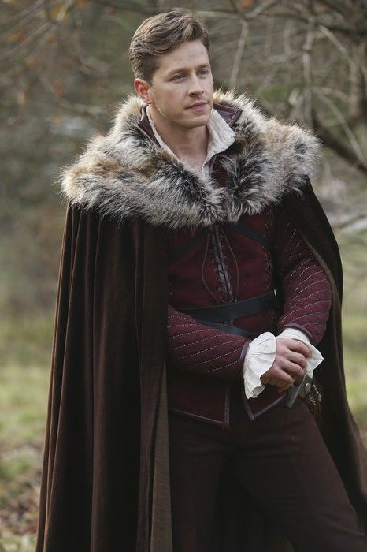
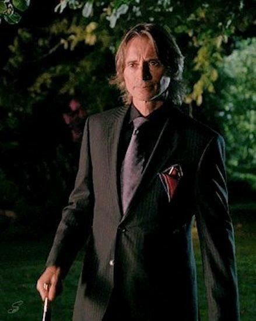

Elenco
Elenco & Personagens
| Ator | Personagem Floresta Encantada | Personagem Store Book | Fotos |
|---|---|---|---|
| Ginnifer Goodwin | Branca de Neve | Mary Margaret Blanchard |  |
| Jennifer Morrison | Filha da Branca de Neve | Emma Swan |  |
| Lana Parrilla | Rainha Má | Regina Mills |  |
| Josh Dallas | Mendigo Príncipe Encantado | David Nolan |  |
| Jared S. Gilmore | Henry Mills |  |
|
| Raphael Sbarge | Grilo Falante | Dr. Archibald Hopper |  |
| Jamie Dornan | Caçador | Xerife Graham Humbert |  |
| Robert Carlyle | Rumplestiltskin Crocodilo Fera | Sr. Gold |  |
| Eion Bailey | Pinóquio | August Wayne Booth |  |
| Meghan Ory | Chapeuzinho Vermelho Lobo |
Ruby |  |
| Colin O'Donoghue | Killian Jones Capitão Gancho | Roger |  |
| Michael Raymond-James | Baelfire | Neal Cassidy |  |
| Michael Socha | Valete de Copas Rei Branco | Will Scarlet |  |
| Rebecca Mader | Zelena Bruxa Má do Oeste | Kelly West |  |
| Sean Maguire | Robin Hood |  |
|
| Dania Ramirez | Cinderela | Jacinda Vidrio | |